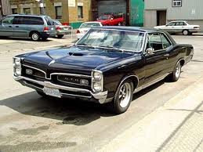

Pontiac GTO
The Pontiac GTO is an American automobile built by Pontiac Division of General Motors from 1964 to 1974 and by GM subsidiary Holden in Australia from 2004 to 2006. It was a muscle car classic of the 1960s and 1970s. From 1964 until midway through 1973 it was closely related to the Pontiac Tempest/Le Mans and for the 1974 model year it was based on the Pontiac Ventura. The 21st century GTO is essentially a left-hand drive Holden Monaro, itself a coupe variant of the Holden Commodore.
Ford Torino GT

The Ford Torino is an intermediate automobile produced by the Ford Motor Company for the North American market between 1968 and 1976. The car was named after the city of Turin (Torino, in Italian), which is considered the Detroit (primary automobile production city) of Italy. The Torino was initially an upscale version of the intermediate sized Ford Fairlane, which Ford produced between 1962 and 1970. After 1968, the Fairlane name was retained for the base models with lower levels of trim than those models which wore the Torino name. During this time, the Torino was considered a subseries to the Fairlane. By 1970 Torino had become the primary name for Ford's intermediate, and the Fairlane was now a subseries of the Torino. In 1971 the Fairlane name was dropped altogether and all Ford intermediates were called Torino. This name was one of several originally proposed for the Mustang while in development.[1] The Torino was essentially a twin to the Mercury Montego line.
Buick Gran Sport

The 1965 Skylark Gran Sport was the intermediate Buick Skylark with the Gran Sport option added. Although a 300 cu in (4,916 cc) V8 was already offered in the Skylark, the Gran Sport had the largest engine permitted by GM - a 400 cu in (6,555 cc) Buick V8. This engine was actually 401 cu in (6,570 cc), but called a "400" by Buick because that was the maximum engine size limit set by General Motors for the intermediate body cars. This engine produced 325 hp (242 kW) and 445 lb·ft (603 Nm) and was known as the "nailhead" engine. Buick sold more than 15,000 Skylarks with the Gran Sport option that first year, and almost as many the next. It was renamed the GS 400 in 1967, and the Gran Sport became its own model in (about) that same year along with a new "400" engine quite different from the famously reliable but becoming-obsolete nailhead engine design that was first introduced in 1953. Sales fell somewhat in the face of increasingly higher-performance and more popular muscle cars from other marques when compared to those from the more stodgy and expensive Buick. Buick, however stepped it up a notch when introducing the Stage 1 option in 1969. This limited production (less than 1,500 cars in 1969) version delivered 340 hp (253 kW) and 440 lb·ft (597 Nm).
Dodge Charger Rt

On January 1, 1966, viewers of the Rose Bowl were first introduced to the new "Leader of the Dodge Rebellion", the 1966 Charger. The Charger's debut also followed by a half model year the introduction of a new street version of the 426 cu in (7.0 L) Chrysler Hemi engine. With the Charger, Dodge had a new model to build a performance image to go along with this engine. Designed by Carl "CAM" Cameron, the Dodge Charger introduced a fastback roofline and a pot-metal "electric shaver" grille. The grille used fully rotating headlights (180 degree) that when opened or closed made the grille look like one-piece unit. Hidden headlamps were a feature not seen on a Chrysler product since the 1942 DeSoto. In the rear of the new Dodge, the fastback design ended over a full-width six-lamp taillight that featured chromed "CHARGER" lettering.
Oldsmobile 442

The Oldsmobile 442 (pronounced four-four-two) was a muscle car produced by the Oldsmobile division of General Motors. It was introduced as an option package for F-85 and Cutlass models sold in the United States beginning with the 1964 model year. The 442 appellation comes from the configuration of the car: a four-barrel carburetor, a four-speed manual transmission, and dual exhaust pipes. It became a model in its own right from 1968 to 1971, then reverted to an option through the mid-1970s. Oldsmobile revived the name in the 1980s on the rear-wheel drive Cutlass Supreme and early 1990s as an option package for the new front-wheel drive Cutlass.
Plymouth Road Runner

The Plymouth Road Runner was a performance car built by the Plymouth division of the Chrysler Corporation in the United States between 1968 and 1980. In 1968, the first muscle cars were, in the opinion of many, moving away from their roots as relatively cheap, fast cars as they gained options. Although Plymouth already had a performance car in the GTX, designers decided to go back to the drawing board and reincarnate the original muscle car concept. Plymouth wanted a car able to run 14-second times in the quarter mile (402 m) and sell for less than US$3000. Both goals were met, and the low-cost muscle car hit the street. The success of the Road Runner would far outpace the upscale and lower volume GTX, with which it was often confused.
Mercury Cyclone

The Mercury Cyclone is an automobile produced by the Mercury division of the Ford Motor Company from 1964 to 1971. It started as a perfomance model of the 1964 Mercury Comet, and was named the Mercury Comet Cyclone through 1967. In 1968, the "Comet" part of the name was dropped. Options such as GT, Spoiler and Cobra Jet were added and removed. In 1971, it was integrated into the Mercury Montego line as their performance model.
AMC Rebel

The AMC Rebel (known as the Rambler Rebel in 1967) is a mid-size car produced by American Motors Corporation (AMC) from 1967 to 1970. It replaced the Rambler Classic. The Rebel was replaced by the similar AMC Matador for the 1971 model year. The Rebel was positioned as the high-volume seller in the independent automaker's line of models. The Rebel was based on AMC's "senior" automobile platform shared with the full-size Ambassador line. For the U.S. and Canadian markets, the Rebel was built at AMC's "West Assembly Line" (along with the Ambassador) in Kenosha, Wisconsin and at Brampton, Ontario, Canada (Bramalea - Brampton Assembly Plant). The Rebel was also assembled from Complete knock down (CKD) kits under license in Europe (by Renault), in Mexico (by Vehiculos Automotores Mexicanos), in Australia (by Australian Motor Industries) [1] and in New Zealand (Campbell Motor Industries in Thames). Rebels continued to be sold in these and other international markets under the "Rambler" brandname.